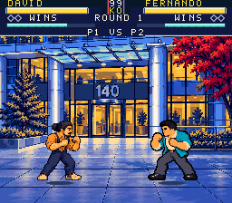
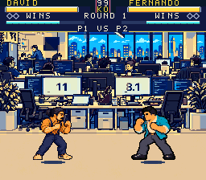

Four attack buttons
| SNES | Keyboard | Attack |
|---|---|---|
| Y | A | Light punch |
| X | S | Strong punch |
| B | Z | Light kick |
| A | X | Strong kick |
SNES commands: Down+X uppercut · toward+X throw · Down+A sweep · Down+Y special. Quarter-circle + punch also casts the special. L/R change the level at home and in paused CPU Training.


The win medal and low health were earned through controller input. All twelve fighter sets and their approved art are retained.